Tomatensoep
Geserveerd met brood
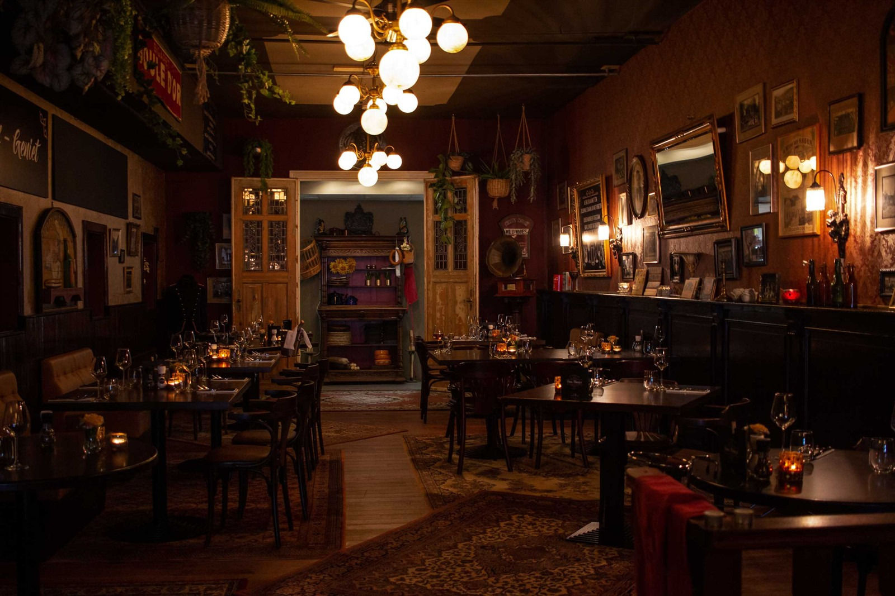
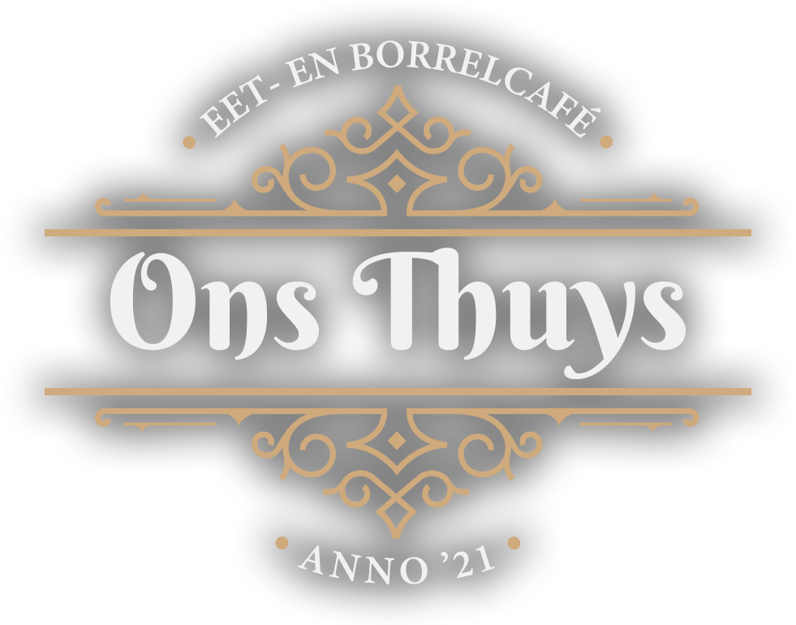
Brabantse gemoedelijkheid, gastvrijheid en goed eten, midden in het centrum van Sint-Oedenrode.
Ons Thuys is een eet- en borrelcafé waar je terecht kunt voor een heerlijk diner en een gezellige borrel.
Midden in het centrum van Sint-Oedenrode, nabij de Martinuskerk ontvangen we je graag in ons gezellige authentieke eetcafé. Bij ons maak je kennis met Brabantse gemoedelijkheid, gastvrijheid en goed eten. Loop daarom gerust eens binnen voor een heerlijk drankje en blijf hangen voor een hapje.
De gastvrije bediening staat voor je klaar en de enthousiaste koks verrassen je graag met diverse gerechten van onze menukaart. Eet smakelijk.
Reserveren? Bel 06-47112267. Heb je iets te vieren? Neem dan contact met ons op via info@eetcafeonsthuys.nl.
Houd ook onze Facebook en Instagram in de gaten voor leuke acties, evenementen en nieuwtjes.
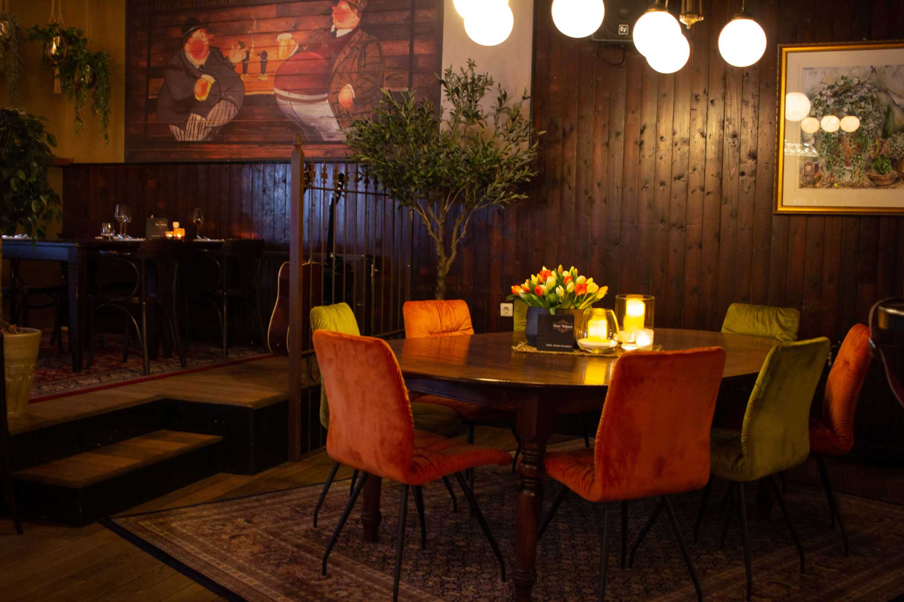
Al onze hoofdgerechten worden geserveerd met friet. Heeft u een allergie? Meld het ons!
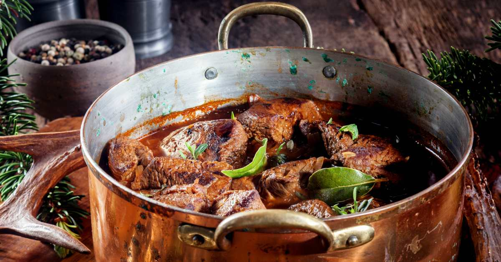
Geserveerd met brood
Kastanje champignons • Brood
Rivierkreeft • Brood
Wisselende soep • Brood
Met verschillende dipsauzen
Truffelmayonaise • Pesto • Parmezaanse kaas • Spekjes • Zongedroogde tomaat
Truffelmayonaise • Zoetzure rode ui • Brioche
Wasabi mayonaise • Zoetzure kerrie-rettich • Wakame
Sojasaus • Sojabonen • Wakame • Furikake
Aceto balsamico • Tomatensalsa • Kruidensalade
Pesto • Geitenkaas • Granny Smith • Sesamstengel
Aceto balsamico • Rietsuiker • Compote van peer
Wisselende soep • Selectie vlees- en visgerechten
Een verrassende selectie vlees- en visgerechten van onze chef. Vanaf 2 personen te bestellen.
Teriyakisaus • Taugé • Paksoi
Champignonroomsaus • Truffelrisotto • Serranoham
Lucullus chilisaus • Taugé • Hoisin • Sojabonen
Chimichurri • Groentequiche • Groene asperge
Pepersaus • Sparerib • Diamanthaas • Bavette • Kipspies
Truffeljus • Groene asperge • Haricots verts
Rode port sjalotsaus • Seizoensgroenten • Aardappelgratin
Tijmsaus • Brie • Truffelroomkaas
Dagprijs. Vraag onze medewerkers.
Truffelsaus • Cheddar • Augurkenchutney • Bacon • Tomaat
Taugé • Cashewnoten • Paddenstoelen
Knoflooksaus • Cocktailsaus
Mangochutney • Atjar tjampoer • Gebakken uitjes
Udon noodles • Cashewnoten • Wokgroenten
Pesto • Tomatensalsa • Burratini
BBQ-saus • Krokante uienringen • Cheddar
Al onze hoofdgerechten worden geserveerd met friet.
Teriyakisaus • Furikake • Udon noodles
Kreeftensaus • Rivierkreeft • Zeekraal
Witte wijnsaus • Groene kruidenkorst • Bimi
Heeft u een allergie? Meld het ons!
Selectie desserts van de kaart
Karamelsaus • Schotse van chocolade • Slagroom
Chocoladesaus • Ambachtelijk vanille-ijs • Schotse van chocolade
Gel van mandarijn • Crumble
Compote van rood fruit • Roomboterkake • Witte chocolade
Lange vingers • Cacaopoeder
5-tal kazen • Vijgenbrood • Perencompote
Selectie borrelhapjes van de borrelkaart
Gehakt • Kaas • Bosui • Crème fraîche • Guacamole
Meer dan 50 bieren, van tap en op fles of blik.
Een verfrissend, zuiver en goed doordrinkbaar pils met tonen van granen en fruit. Dorstlessend helder lichtblond bier met een aangename bitter in de afdronk.
Fruitage by Rodenbach is een zachtzuur doordrinkbaar fruitbier. Een echte dorstlesser met enkel natuurlijke ingrediënten.
Tarwebier met een volle smaak. Hints van karamel en abrikoos en heeft een romige, licht zoete afdronk. De trots van Texels.
Zacht, fris en romig – de tarwe geeft die romigheid, plus een lichte, aangenaam friszure smaak. In de geur domineert banaan en kruidnagel.
La Chouffe brengt citrustonen in de mond, gevolgd door een verfrissende, aangenaam kruidige toets die het geheel een grote lichtheid geeft.
Als je goed proeft, herken je het belangrijke ingrediënt dat onlosmakelijk is verbonden met monniken. De stilte.
In 2014 ontstaan uit een kleine groep enthousiaste bierliefhebbers met een droom. Jaarlijks brouwen zij waanzinnig veel uiteenlopende bieren.
Vraag onze medewerkers!
Vrijdagavond is cocktailavond: alle cocktails voor slechts € 7,50.
Vodka • Kahlua • Espresso
Passievrucht • Vodka • Eiwit
Bacardi • Munt • Limoen • Rietsuiker
Kokos • Malibu • Ananas
Jus d’orange • Grenadine • Tequila
Contrieau • Vodka • Gin • Bacardi • Tequila
Peachtree • Jus d’orange • Cranberry • Vodka
Vodka • Ginger beer • Munt • Limoen
Hendrick’s Gin • Ginger beer • Komkommer • Limoen
Signature tonic water • Sambuca • Steranijs • Citroen
Hendrick’s Gin • Citroensap • Chaudfontaine rood • Sinaasappel
Hendrick’s Gin • Citroensap • Slagroom • Suikersiroop
Star & Stripes whisky • Citroensap • Suikersiroop • Eiwit
Limoensap • Bacardi • Coca-Cola
Vodka • Kahlua • Suikersiroop • Slagroom
Bacardi • Ananas • Limoensap • Angostura bitters
Amaretto • Citroensap • Suikersiroop • Eiwit
Bacardi spiced • Limoen • Ginger beer • Angostura bitters
Contrieau • Sinaasappel • Citroen
Licor 43 • Limoen • Sinaasappel
Limoncello • Sinaasappel • Limoen
Komkommer • Jeneverbes • Royal Bliss signature tonic
Kaneelstok • Sinaasappel • Steranijs • Royal Bliss tonic water
Rode bessen • Aardbeien • Royal Bliss pink tonic
Rode bessen • Aardbeien • Mousserend
Komkommer • Limoen • Royal Bliss tonic water
Alle koffies zijn ook cafeïnevrij te bestellen.
Heeft u een allergie? Meld het ons! Originele kaarten (pdf): dinerkaart, dessertkaart, borrelkaart en cocktails.
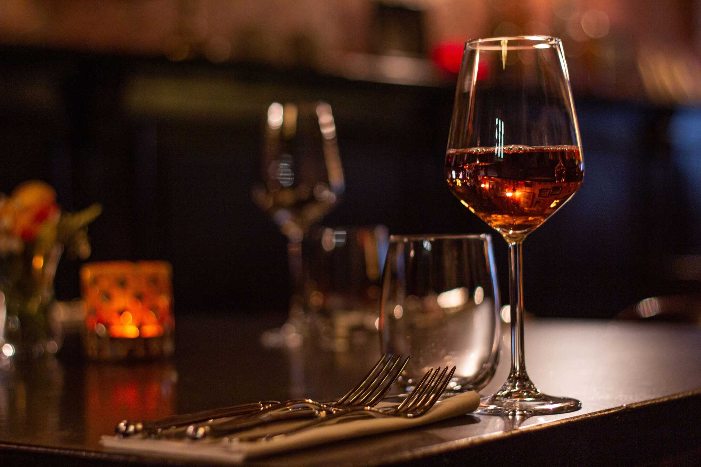
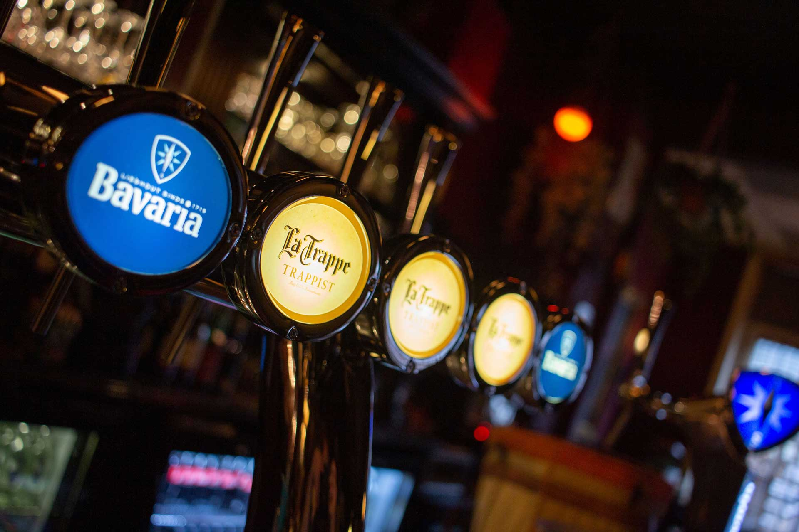
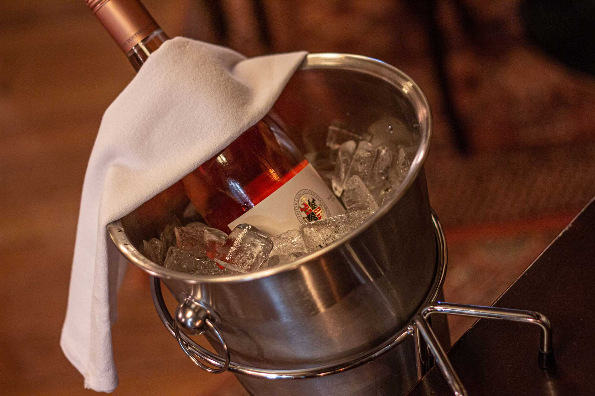
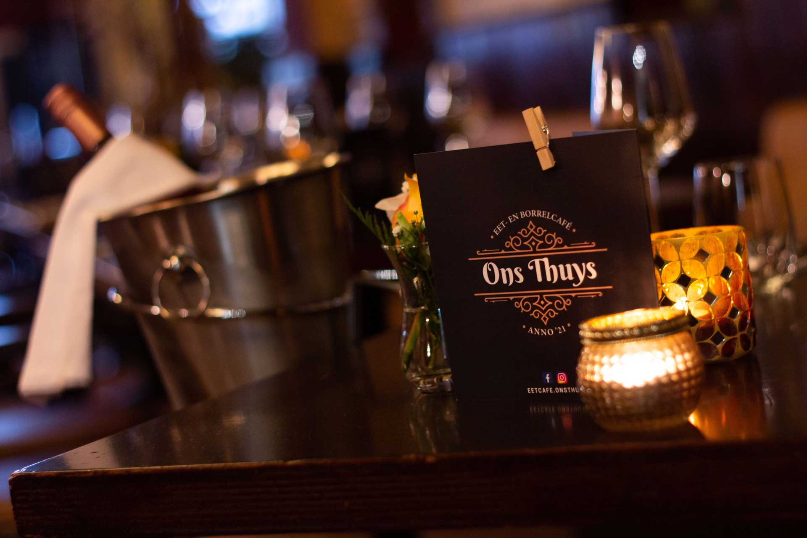
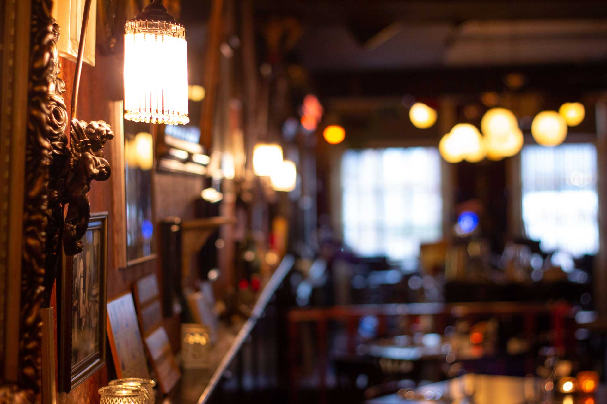
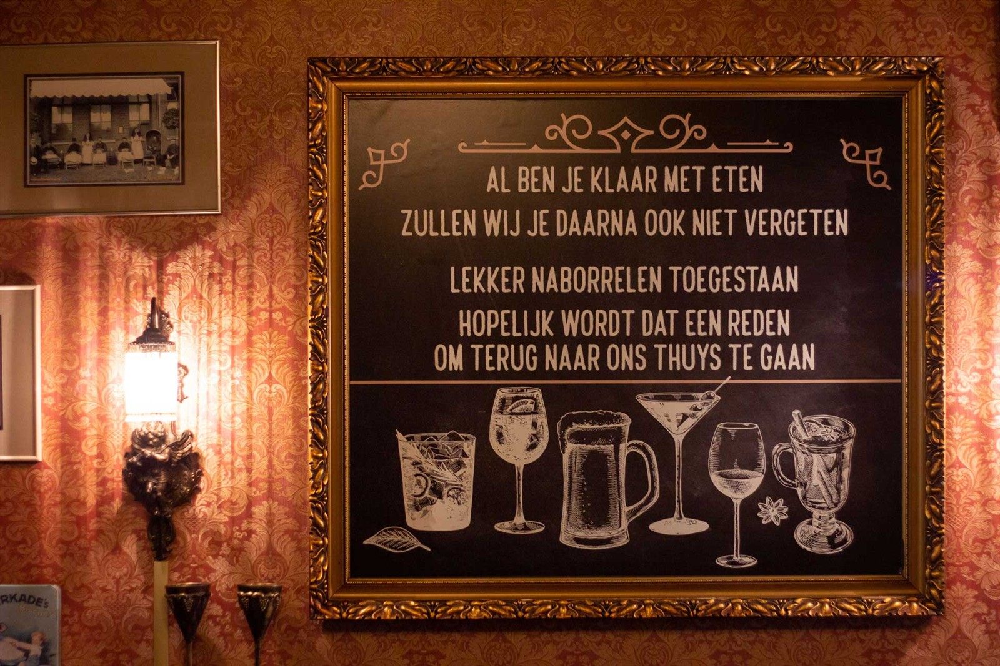
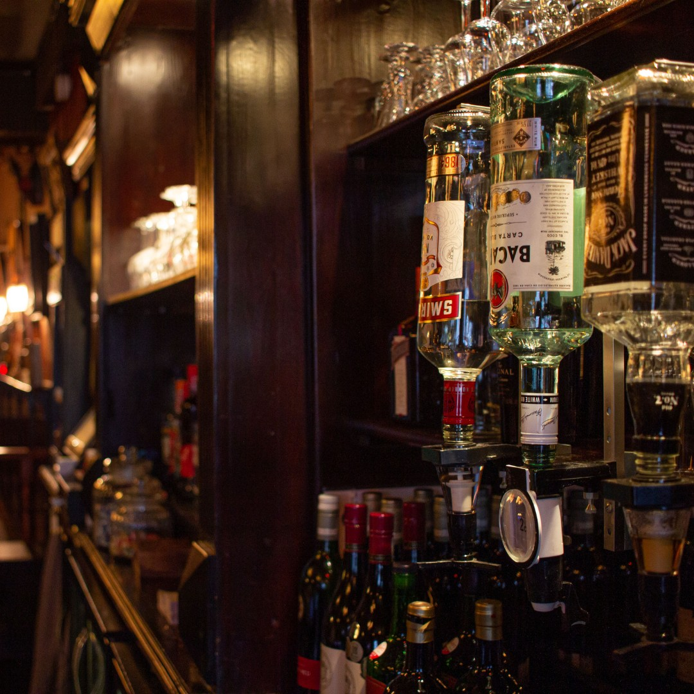
Met veel liefde en plezier runnen we Eet- en Borrelcafé Ons Thuys. En nu hebben we er een prachtig zusje bij: D’n Overkant.
Een sfeervolle, veelzijdige locatie op slechts een steenworp afstand, midden in het hart van Sint-Oedenrode. Of je nu iets te vieren hebt of samen wilt komen in een intieme setting, D’n Overkant biedt alle ruimte voor besloten gelegenheden zoals jubileumfeesten, verjaardagen, feestavonden, koffietafels, quizavonden en nog veel meer.
Met een gezellige bar, een knus doorkijkje, een ruime indeling, een goed geluidssysteem en de centrale ligging in het centrum, is dit dé plek voor jouw gelegenheid!
Vrijdagavond is cocktailavond: alle cocktails € 7,50.
Bel 06-47112267 of mail info@eetcafeonsthuys.nl.
Heuvel 9, 5492 AC Sint-Oedenrode
Werken bij Ons Thuys? Zij zoeken medewerkers voor keuken, bediening en afwas: bel 06-47112267 of mail info@eetcafeonsthuys.nl.